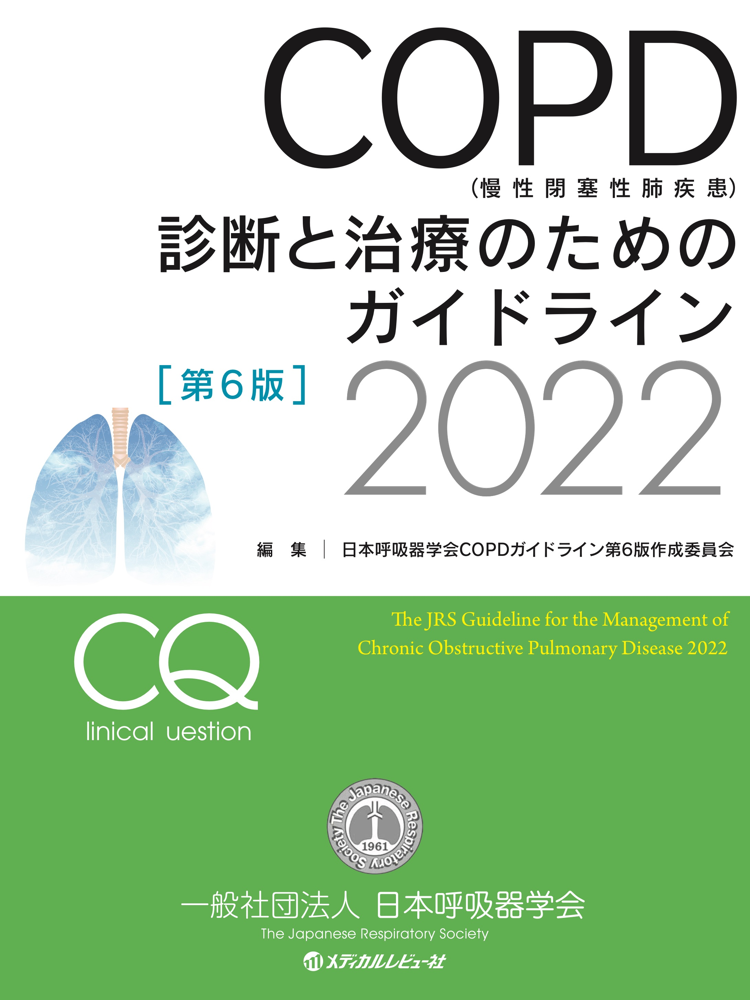

チアノーゼや意識障害など重篤な場合はアドレナリン0.3mg筋注も考慮．
Xpで気胸や無気肺，肺水腫の除外．
ピークフローメーター測定
ネブライザー吸入（ベネトリン0.3-0.5mL+生食5-10mL）を20分あけて3セット
SABA最終から1時間で症状軽快→帰宅．発作予想ならプレドニン5mgを4-5T
改善なし→入院でソルメドロール40-125mgやリンデロン4-8mg
治療不良例にはMg投与も効果的とされている．（硫酸Mg 2g+生食100mLを20分で）
→サマリー 1 / 6
